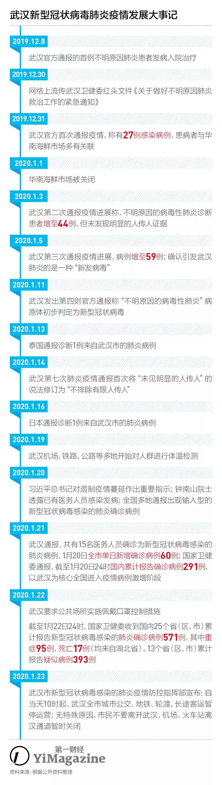
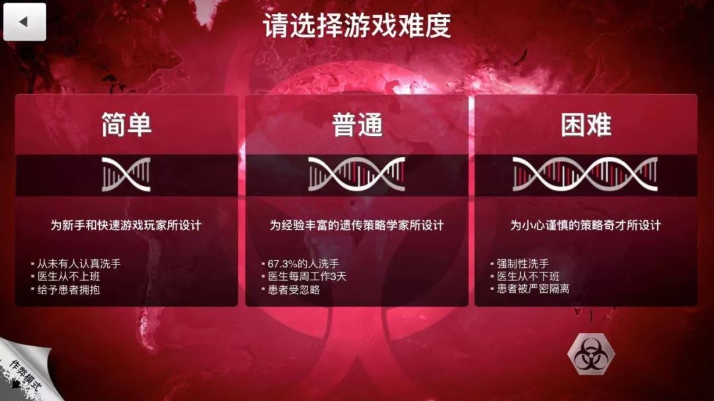
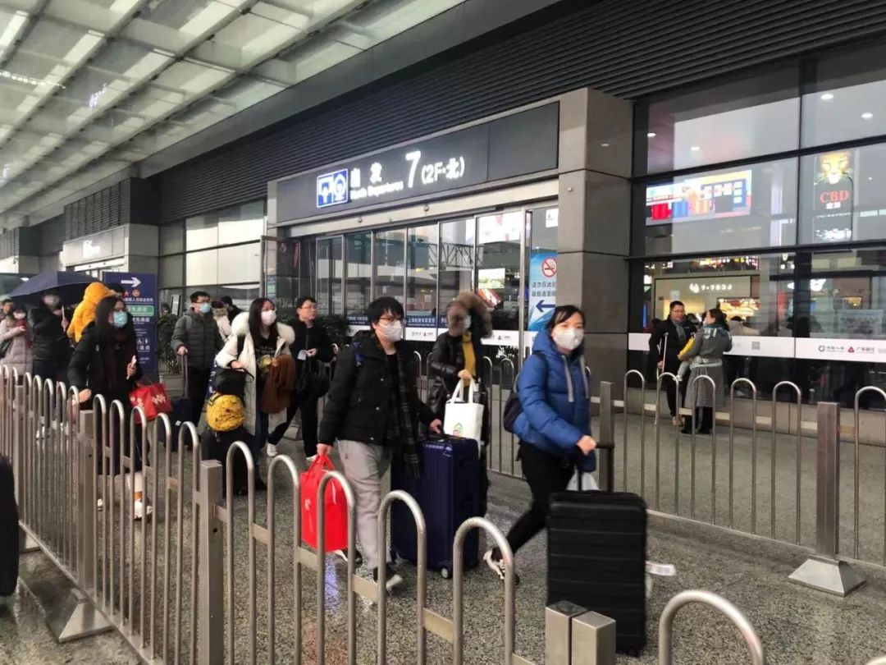

口罩告急！武汉医生每日发愁防护物资短缺
原文链接 备份链接 其他科室要尽量把医用口罩和防护服留给隔离病房的医护人员使用 2020年1月22日，在湖北省政府首场新型冠状病毒感染肺炎疫情防控工作新闻发布会上公布，新型冠状病毒感染的肺炎已致湖北17人死亡。图/新华 文 |《财经》 …

历史上，很多置人于死地的病毒并不是被人类消灭了，而是人类和它们分开居住了。
记者 | 吴洋洋 许冰清 刘娉婷 郑晶敏 郭苏妍 邓舒夏
数据资料整理 | 王一越
图表制作 | 程 星
确诊人数出现激增72小时之后，武汉市新型冠状病毒感染的肺炎疫情防控指挥部在2020年1月23日凌晨2点宣布，从1月23日10时起，暂时关闭市内公共交通以及航空和铁路的离汉通道。此时距离武汉卫健委首次通报27例不明肺炎感染病例已过去23日。

“封城”前的武汉地铁。图片来源 | 人民日报
舆情转折点出现在1月20日晚间。
当晚，国家主席习近平对肺炎疫情做出指示称“要把人民群众的生命安全和身体健康放在第一位”。随后，国家卫健委高级专家组组长钟南山接受了记者采访，证实了武汉肺炎可以“人传人”，而非之前声称的“可防可控”，同时他也证实已有医务人员被感染。在2003年抗击SARS疫情的过程中，钟南山曾给国人留下了深刻印象。他的这则发声迅速在互联网上发酵。

1月21日，一款名为《瘟疫公司》的以传染病为题材的策略游戏登上了App Store付费游戏榜的榜首。这款游戏要求玩家将所选定的病原体散布到全球各地，从而制造一场超级瘟疫，最终让全人类死于该传染病。在病原体传播和感染的过程中，玩家可以不断修正其传染性和抵抗力，以应对来自各国政府及科学家们的反击措施。

《瘟疫公司》登上App Store付费游戏榜的榜首。
位于英国伦敦的独立游戏工作室Ndemic Creations早在2012年就开发了这款游戏。仅仅一周之前，它都还没什么名气，但武汉新型冠状病毒感染肺炎的新闻迅速为它重聚了玩家。
陈墨5年前玩过这款游戏，1月21日凌晨，他因为武汉肺炎又重新下载了它，根据从新闻中获取的已知信息模拟了：选择困难模式、传染源选择病毒、传播方式选择家畜传播、症状为咳嗽和肺炎。结果，他在游戏中用了1年时间就把人类灭绝了。总结他的“取胜”经验就是：“初期传染性强而致命性弱的病毒更容易传播，等到所有人都感染之后增加其致命性，就能快速获胜。”

希望现实比困难模式更难。
在2019年12月的最近一次更新中，该游戏增加了“假新闻”功能。玩家可以发布谣言，蒙蔽一部分人类，从而加速疾病传播。
武汉肺炎当然不是陈墨手中的虚拟游戏。不过，为战胜现实中不断变异的病毒，人类与之上演的不仅是技术竞赛，也是时间竞赛。商业和公司是其中一股重要的力量。
迟来的警惕心
1月21日下午，菜鸟物流向武汉的一线配送员紧急发放了近万只口罩、上千块硫磺皂作为预防物资，并要求每位提供上门服务的配送员佩戴口罩。
当天晚些时候，携程发布了可免费退订武汉当地酒店、旅游产品的消息，紧接着，飞猪、美团等OTA平台和华住、亚朵等酒店公司也推出了类似举措。飞猪还补了一条，所有因参与疫情紧急救治而返岗的医护人员在该平台预订的全部产品都可以免费取消。
到了晚间，民航局就下发通知，要求各航空公司免费为预订了行经武汉航班的旅客退票。铁路系统则为1月24日24时前到达或离开武汉的列车旅客做免费退票。
1月21日搭乘高铁在武汉汉口火车站转车回家过春节的李欣欣看到，火车站内几乎每个人都戴上了口罩，旅客进出火车站的位置，都增加了红外检测体温的设备。而距此4天前（1月18日），《第一财经》YiMagazine记者行经此地时，既没有看到体温测量措施，而车站内很多人也没意识到应该戴口罩，极少数戴口罩的年轻人，使用的还是普通医用口罩，有一个戴N95的男生在人群中很显眼。

出行的人大部分带上了口罩。
汉口火车站距离武汉肺炎最早爆发的武汉华南海鲜市场只有一公里。
一位长年在武汉工作的人士对《第一财经》YiMagazine称，1月21日之前，当地政府和他所在公司都并没有针对当地人员向外地流动做出任何限制。在那之后，只要没发烧，人们还是可以随时离开武汉。他当天走在武汉的大街上，看到戴口罩的也仍是少数人，加上火车站的密集人流，眼前的景象让他认为所谓的“疫情”并不严重。
“大家一开始觉得疫情过去了，前天（1月20日）看官方报道才意识到问题比较严重。”在武汉当外卖配送员的杨超的体会是，过去一周点外卖的人越来越少，即使有人点了，也会要求外卖放到门口，“钟南山院士说在武汉的尽量留在武汉，没有重要事情不要来武汉，（就觉得）确实蛮严重了。”
一周前，杨超还去医院送过外卖，发现所有的医生护士都戴上了口罩，当时还感到奇怪，因为他听到的说法一直是“疫情不会出现人传人，可防可控”。现在，他从公司领了口罩和防病毒口服液。杨超本来的计划是想趁很多同事都回老家的时候留守武汉“赚钱”。不过眼下这个愿望可能要落空了。根据杨超的观察，大概9成的餐饮店都关门不再营业——除了连锁类餐饮店，本地商家都关门了。

盒马在武汉地区的配送员。
紧急重启
短短几天之前，武汉得到的关注度还很有限。
除了来自中国香港的疑似病例数字每天刷新，内地各大城市的公司人几乎都渡过了热闹的公司年会，然后订好了春节出游或回家乡团聚的车票。临近春节放假这段时间的高铁票，早在一个月前就几乎售罄，当时距离武汉医院收治第一例疑似新型肺炎病人的12月8日，已经过去了两周。每个人都计划着这个比往年来得早一点的农历新年。
但本周突然紧张的疫情让许多业务与之相关的公司必须迅速做出应对。
除了开头提到的各大旅游预订平台立刻反应推出的免费退订信息，很多公司的员工都被紧急拉回了公司加班。

1月21日深夜，菜鸟紧急协调了应急调配车辆，连夜将一批口罩装车、发车，分别运往武汉、北京、上海等12个城市的猫超仓库。
拼多多和百度的程序员都被叫回公司连夜制作了防治肺炎的专题，将有关防治知识和产品放在一个专题页。空气净化器公司IQAir也从21日起开始忙着联系武汉定点救治医院，主动提出捐赠一批空气净化器，定点支持疫情的重点科室，比如发热科、呼吸科、急诊科、感染科等。
1月22日下午，同济医院和武汉协和接收了IQAir赠送的设备。菜鸟物流也打出包票，声称春节期间正常配送。不过这些行动都无法解决上游口罩供应不足和春节这个特殊时期的干线物流问题。
京东物流于1月22日晚间宣布启动应急方案，在春节期间保障全国近300个城市、上千个区县的物流服务不间断的基础上，自即日起至农历正月十五，将优先配送医疗机构指定的订单。霍尼韦尔声称目前的库存原则上能够满足春节期间的口罩供应，但目前很大一部分口罩优先供应武汉和一线医务人员的需求，而“临近春节物流方面遇到的挑战很大。”
包括IQAir、3M在内的口罩生产厂商的货仓都已清空。拼多多成立了一个找口罩团队，发动所有采购员在全国范围内寻找口罩供应商。跟京东、淘宝这类有自营能力的平台不同，拼多多这种缺乏自营体系的电商平台非常依赖商家去搞货，他们发现3M位于山东临沂的大经销商是有货的，但是需要平台的商家去拉，所以响应速度不够快。拼多多还有“Plan B”，就是用已经在平台开店的维德推一波该品牌的医用口罩，1月21日晚间先上了2000个库存，19.7元20只，很快就卖空了。第二批货售价58.9元，拼多多提出“百亿补贴”计划，平台为这一单补40元，累积已经卖出4.3万件货。
阿里巴巴在1月23日凌晨3点接到来自武汉的紧急求助电话：N95级别口罩，型号1860或9132；二级以上医用防护服，二级以上医用护目镜。据悉，目前重点区域每天消耗2000套，预估备货100天，总计需要20万套。
在武汉有业务分支的公司在过去的72小时内也经历了一番紧急应对。
包括麦当劳、肯德基、盒马鲜生等在内的餐饮零售类公司都对《第一财经》YiMagazine表示会在春节期间继续营业，它们声称加强了店铺的消毒措施，比如启动上班员工测温流程、为顾客提供免洗或消毒洗手液，以及要求送餐员佩戴口罩送餐。从事外送服务的美团和饿了么在此基础上暂停了武汉部分医院的配送服务。而小米武汉分公司则在1月20日关注到疫情升级新闻后，第一时间通知员工从次日起“全员在家办公”。
武汉盒马鲜生为顾客准备了口罩。
这些公司层面的应急措施，基本都是在过去72小时内紧急制定出的。很多公司的公关在1月22日回应《第一财经》YiMagazine的采访需求时，都需要现抓相关业务单元的同事沟通，酝酿公司表态文案。
未知的未来
公开还是隐瞒，对于传染类疾病的治理各有利弊。2014年埃博拉病毒爆发后，利比亚宣布国家进入紧急状态，采取了宵禁、隔离疫区和限制旅行等措施，直到今年，这个国家的GDP增长率还保持在2.5%的水平，远低于疾病爆发前的8.7%。不仅当地旅游业和餐饮零售业受到重创，还出现了粮食危机，因为出于对疫情的恐惧，大批农民逃离家园。
当病毒显示了可以置人于死地的能耐时，它们玩的就不是与人的共生或者经济上的博弈，而是零和游戏。
习近平和钟南山的两则发言过后，武汉肺炎的新增确诊数量迅速扩大了。1月17日以来，确诊的患者数量相比之前形成陡峭的上扬曲线。1月22日晚间的舆情热点，已经从不可预计的确诊数量，转换为武汉医院拥挤的场景，以及医院门口排起的长长的队伍。武汉市市长此前宣布，全市用于疫情救治的医院床位约4300张。接下来，这座城市将面临从医疗资源，到城市治理等全方面的考验。

图片来源 | 央视新闻
中国香港曾在2003年非典事件后总结过疫情对城市商业的影响：最早被波及是旅游和出行产业；接下来就是就业困难——疫情致使零售、消费行业以及餐饮等服务行业备受打击，而它们都是劳工密集的行业，营业额下降也使得就业情况恶化；此外，SARS疫情出现于春天，很多洽谈生意和订购货物的商业活动在那时被迫中断，其结果就是下半年的贸易出口数据上受到影响。
2020年1月23日凌晨2点，武汉新型冠状病毒感染的肺炎疫情防控指挥部宣布，将从23日上午10时起，全市的城市公交、地铁、轮渡以及长途客运暂停运营；无特殊原因，市民不要离开武汉。机场、火车站离汉通道暂时关闭，恢复时间另行通知。
据航班管家数据显示，截至1月22日13点30分，2020年1月22日至2月1日，武汉天河机场国内直飞航线76条、计划出港航班2879架次；国际航线30条、计划出港航班293架次；港澳台航线4条，计划出港航班55架次。第一财经了解到，已有航空公司被相关部门通知召开紧急会议，研究全部停航涉武汉航班。
2003年SARS疫情时期，中国的城市也并未有过如此经历。
（应采访对象要求，文中陈墨、李欣欣、杨超为化名。实习记者陶紫东对本文亦有采访贡献。）
本文文字版权归第一财经所有，
未经授权许可不得转载或翻译。

原文链接 备份链接 其他科室要尽量把医用口罩和防护服留给隔离病房的医护人员使用 2020年1月22日，在湖北省政府首场新型冠状病毒感染肺炎疫情防控工作新闻发布会上公布，新型冠状病毒感染的肺炎已致湖北17人死亡。图/新华 文 |《财经》 …
原文链接 备份链接 文 | 王彦入 王丹妮 程静之 殷盛琳 李晓芳 周航 叶雯 曾宪雯 编辑 | 王珊 陶若谷 33岁的刘科戴上两层口罩独自走进地铁，夹杂在路人中间。像他这样拉着行李箱的人并不少见，彼此间默契地保持着距离。三天前，他刚刚从 …
原文链接 备份链接 开启更有意思的武汉！请点击上方优良better →点击右上角“…” → “设为星标 ” 22号下午三点半，记者王菁从武汉站坐上回家的动车，随身携带一个粉色双肩包，和一个二十四寸的棕色行李箱，里面放 …
原文链接 备份链接 【财新网】（记者 黄蕙昭）一则半夜发布的“封城”通告惊动全国，也拉开武汉肺炎防疫之战新势态。1月23日凌晨两点，武汉市新型冠状病毒感染的肺炎疫情防控指挥部通报宣布，今日10时起，武汉公交、地铁、轮渡、长途客运暂停运 …
原文链接 备份链接 发热门诊排起长龙的就诊队伍似乎在宣告，这座城市正面临一次巨大的挑战。 全文4742字，阅读约需9分钟 ▲湖北各地出现口罩防护服等防疫物资短缺 拟请求国家支援。新京报我们视频出品（ID：wevideo） 距离除夕还有3 …